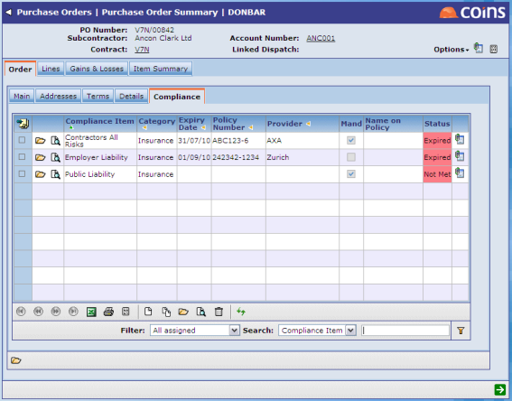
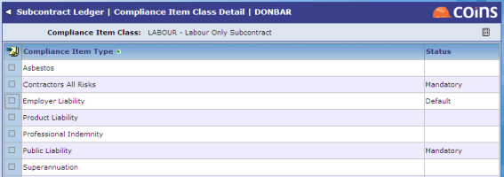

To add to a subcontract:
When entering a subcontract record or subcontract order, set the Class field to the class that is appropriate for the subcontract (or leave it as Not Required if checks are not needed).
adds to the subcontract any on the subcontractor record that belong to the selected class. The Compliance tab shows details of these .

These are inherited from the subcontractor record, and if they are changed on the subcontractor record, those changes will be reflected here. However if you change the details of a on the subcontract record, this breaks the link with the on the subcontractor record; changes on the subcontractor record will not affect the on the subcontract.
You can add other types to the list, or remove any that are not marked as mandatory.
If you change the class to <blank>, this will remove ALL on the subcontract record. If you change the class to a different class, this will remove any that are linked to the subcontractor, retain any that have been amended, and add the extra that belong to the new class.
Committing an order
Committing a subcontract order causes the information on both the subcontractor record and the order to be verified; if any of the records or either the subcontractor record or the order triggers an error, it will not possible to commit the order.
If a record with the same type exists on both the subcontractor and the order it will have to valid on both; it will not be possible to use information on the order to override information on the subcontractor record. For example, if there as an expired public liability insurance record on the subcontractor and a valid public liability insurance record on the subcontract, will prevent you from committing the order (or will issue a warning, depending on the configuration).
Variation orders
When entering a variation order, the tab will be shown if the original order had a class specified. This shows the from the original order, but you can add new items. There is no restriction on which items can be added; new items with the same type as an existing entry can be added. For example, you could add a second "Signed Contract Received" entry, and use the Notes field to show that the new item related to the variation order.
Setting Up Classes
A class is a group of that is used to control when specifications are added to a subcontract.
If you have not set up any classes, the order entry screen will not display the Class field.
To set up classes:
- Go to Classes.
- Enter a code and description for the class.
- The code field is a hyperlink - click this to specify which individual you want to check for this type of subcontract.

The list shows all the that have been set up; the Status field determines which apply to subcontracts with this class:
Blank = The type is not included in this class.
Mandatory = The type is added to all subcontract orders that have this class and cannot be removed.
Default = The type is added to all subcontract orders that have this class but can be removed if not required.
The Included Only filter shows only those that have been included in this class; that is, those with a Default or Mandatory status.
- To include a type in the class, select it and use the action to change the status.